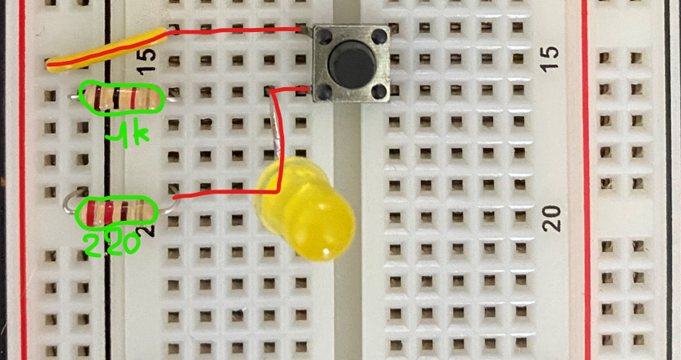
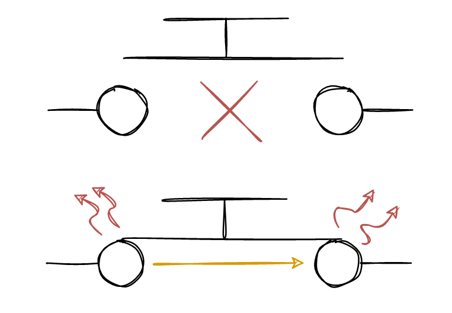
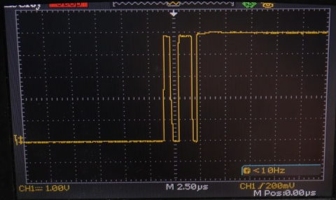
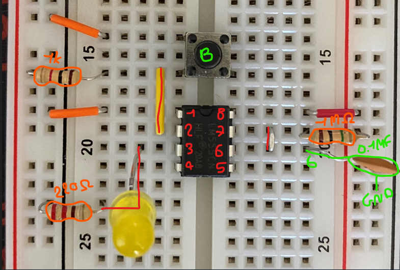
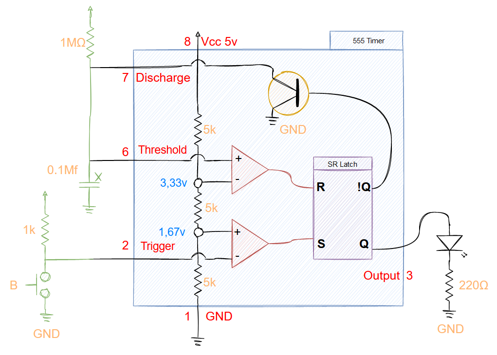
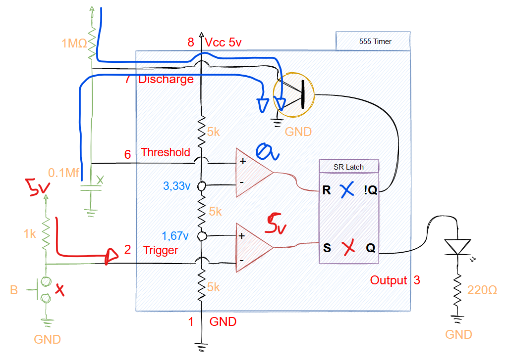
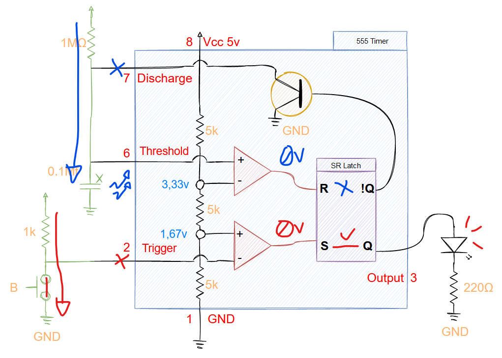
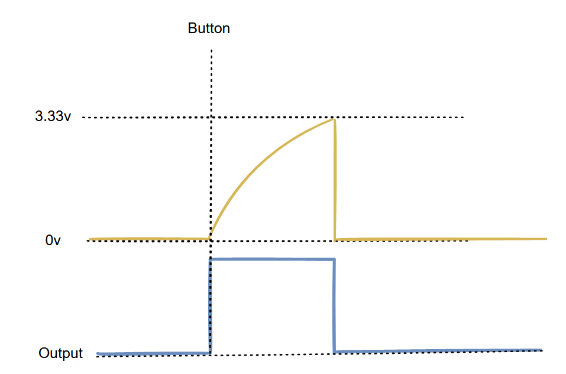

Adrien
Sunday, June 5, 2022
#2 Monostable 555 Timer
Disclaimer: I’m following the amazing series of videos from Ben Eater using his electronic built kit for the 8 bits computer. This series of post is only there for my personnal understanding about electronic and this amazing project. I ablsolutly recommand you to watch his series of videos instead of reading this post of course ! Play-List-Link
Disclaimer 2: I’m not an expert at all, Just a beginner who wants to learn, I stay tuned for corrections or advice! Thanks !
Clock Pulse - Button Issue
In the previous post we were talking about astable 555 timer using a potentiometer to change the clock speed.
In this post, we’ll see how to manually input the clock pulse using a button. This kind of module is very useful for debugging, you can manually impulse the clock of the computer and walk step by step.
However, this is not as easy as using a simple button like this, a simple button that’s going to manage the clock pulse as we wish.

Whenever you press the button, the metallic part will be in contact with the circuit and then send voltage to the LED, but in fact, sometimes the metallic part will touch the circuit and bounce a few times before being completely pressed. Those bounces can be bad if you managed clock impulse and for example input multiple pulses instead of one.
Here is an example of using an oscilloscope on the button input. (Screen from Ben eater’s video)
So as we can see, in this example with only one press on the button, we got 3 impulses.
Debouncing circuit - 555
Yes as you guess, we can use another 555 timer to manage the bouncing of the button.
- 1 1Mo resistor
- 1 555 Timer
- 1 1Mf capacitor or 0,1 capacitor
- 1 LED
- 1 220o resistor
- 1 Press button
- 1 1k resistor
We can multiple the time during which the LED will be ON while pressing the button.
In the current example, we have a 1Mf capacitor and 1Mo resistor, if we multiply the value of the 2 we have 1 Second delay before the LED turns OFF.
Using a 0.1 Capacitor we have 0,1 second delay.
Detailed schematic
For the next par we’ll use the 0.1 capacitor as shown in the next screen.
Like the previous astable 555 timer here is the schemas simplified
Not pressed
So in this state, the button is neutral and both of the comparators are OFF.
The first comparator (red) is OFF because the 5v is flowing and 5v is above 1,67v so the R is OFF. No output.
But the second comparator (blue) is also OFFm as you can see the current is flowing from %v to the discharge direclty and the 1Mf capacitor too. The current is 0v and doesn’t trigger the comparator, so it stays OFF.
So, this is the current state of the Debouncing with the button not pressed.
Pressed
Now let’s see what happens when we press the button.
First (red), the current from the 1k is redirected through the button to the GND. This may cause a 0v value on the first capacitor and then turns ON the S PIN of SR Latch, the LED is ON.
Then on the other side (blue), the current is redirected to the capacitor and charged slowly. On the comparator, the current is below 3,33v so the R PIN is turned OFF and the discharge is no longer active.
Then when the button is not pressed, the capacitor will be instantly discharged when it reach 3.33v and the current will be 0v, so that way the R pin will be turned OFF like the S PIN. The LED will be OFF.
Next
In the next part, we’ll see how to switch between the two mode!